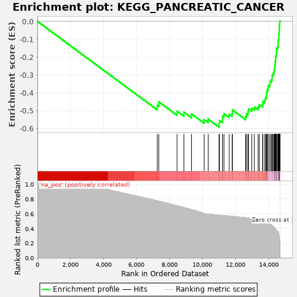
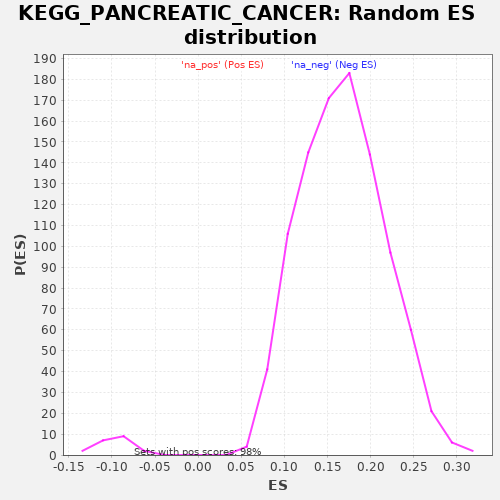

| | | Dataset | drug_embeddings_gsea |
| Phenotype | NoPhenotypeAvailable |
| Upregulated in class | na_neg |
| GeneSet | KEGG_PANCREATIC_CANCER |
| Enrichment Score (ES) | -0.59321254 |
| Normalized Enrichment Score (NES) | -6.076747 |
| Nominal p-value | 0.0 |
| FDR q-value | 0.0 |
| FWER p-Value | 0.0 |
Table: GSEA Results Summary

Fig 1: Enrichment plot: KEGG_PANCREATIC_CANCER
Profile of the Running ES Score & Positions of GeneSet Members on the Rank Ordered List
| PROBE | GENE SYMBOL | GENE_TITLE | RANK IN GENE LIST | RANK METRIC SCORE | RUNNING ES | CORE ENRICHMENT | | 1 | PIK3R5 | | | 7260 | 0.776 | -0.4706 | No |
| 2 | VEGFB | | | 7349 | 0.771 | -0.4511 | No |
| 3 | ARHGEF6 | | | 8456 | 0.707 | -0.5033 | No |
| 4 | RAC3 | | | 8873 | 0.683 | -0.5091 | No |
| 5 | RAC2 | | | 9334 | 0.656 | -0.5189 | No |
| 6 | PGF | | | 10097 | 0.603 | -0.5510 | No |
| 7 | E2F2 | | | 10341 | 0.591 | -0.5481 | No |
| 8 | PLD1 | | | 11002 | 0.580 | -0.5740 | Yes |
| 9 | RALB | | | 11024 | 0.580 | -0.5563 | Yes |
| 10 | RALA | | | 11207 | 0.576 | -0.5497 | Yes |
| 11 | AKT3 | | | 11209 | 0.576 | -0.5307 | Yes |
| 12 | PIK3CD | | | 11299 | 0.574 | -0.5178 | Yes |
| 13 | PIK3CG | | | 11617 | 0.568 | -0.5207 | Yes |
| 14 | TGFA | | | 11798 | 0.565 | -0.5143 | Yes |
| 15 | PIK3CB | | | 11808 | 0.564 | -0.4963 | Yes |
| 16 | RALGDS | | | 12607 | 0.545 | -0.5328 | Yes |
| 17 | EGF | | | 12663 | 0.543 | -0.5186 | Yes |
| 18 | TGFB3 | | | 12751 | 0.540 | -0.5067 | Yes |
| 19 | TGFB2 | | | 12780 | 0.539 | -0.4908 | Yes |
| 20 | RALBP1 | | | 12980 | 0.531 | -0.4868 | Yes |
| 21 | ARAF | | | 13137 | 0.525 | -0.4801 | Yes |
| 22 | E2F3 | | | 13365 | 0.515 | -0.4786 | Yes |
| 23 | MAPK10 | | | 13440 | 0.511 | -0.4668 | Yes |
| 24 | PIK3CA | | | 13636 | 0.498 | -0.4636 | Yes |
| 25 | RAC1 | | | 13657 | 0.496 | -0.4486 | Yes |
| 26 | TGFBR1 | | | 13774 | 0.488 | -0.4404 | Yes |
| 27 | JAK1 | | | 13812 | 0.485 | -0.4269 | Yes |
| 28 | AKT2 | | | 13873 | 0.480 | -0.4151 | Yes |
| 29 | TGFB1 | | | 13878 | 0.480 | -0.3995 | Yes |
| 30 | TGFBR2 | | | 13905 | 0.477 | -0.3855 | Yes |
| 31 | PIK3R3 | | | 13963 | 0.471 | -0.3739 | Yes |
| 32 | PIK3R2 | | | 13979 | 0.469 | -0.3594 | Yes |
| 33 | BRAF | | | 14075 | 0.460 | -0.3507 | Yes |
| 34 | VEGFA | | | 14089 | 0.458 | -0.3364 | Yes |
| 35 | CDC42 | | | 14167 | 0.446 | -0.3269 | Yes |
| 36 | CCND1 | | | 14216 | 0.438 | -0.3157 | Yes |
| 37 | BAD | | | 14218 | 0.438 | -0.3013 | Yes |
| 38 | CHUK | | | 14282 | 0.426 | -0.2915 | Yes |
| 39 | VEGFC | | | 14331 | 0.416 | -0.2810 | Yes |
| 40 | STAT1 | | | 14346 | 0.414 | -0.2683 | Yes |
| 41 | CDK4 | | | 14368 | 0.408 | -0.2562 | Yes |
| 42 | MAPK9 | | | 14388 | 0.405 | -0.2441 | Yes |
| 43 | IKBKB | | | 14402 | 0.399 | -0.2318 | Yes |
| 44 | BRCA2 | | | 14407 | 0.398 | -0.2190 | Yes |
| 45 | KRAS | | | 14429 | 0.393 | -0.2074 | Yes |
| 46 | IKBKG | | | 14430 | 0.392 | -0.1944 | Yes |
| 47 | CDK6 | | | 14471 | 0.374 | -0.1848 | Yes |
| 48 | MAPK3 | | | 14476 | 0.370 | -0.1728 | Yes |
| 49 | PIK3R1 | | | 14486 | 0.366 | -0.1613 | Yes |
| 50 | SMAD4 | | | 14491 | 0.362 | -0.1496 | Yes |
| 51 | RAF1 | | | 14562 | 0.357 | -0.1426 | Yes |
| 52 | CDKN2A | | | 14571 | 0.354 | -0.1314 | Yes |
| 53 | MAP2K1 | | | 14579 | 0.351 | -0.1203 | Yes |
| 54 | STAT3 | | | 14582 | 0.347 | -0.1090 | Yes |
| 55 | CASP9 | | | 14609 | 0.333 | -0.0997 | Yes |
| 56 | RAD51 | | | 14620 | 0.322 | -0.0898 | Yes |
| 57 | NFKB1 | | | 14621 | 0.322 | -0.0791 | Yes |
| 58 | SMAD2 | | | 14627 | 0.317 | -0.0690 | Yes |
| 59 | BCL2L1 | | | 14637 | 0.305 | -0.0595 | Yes |
| 60 | MAPK8 | | | 14643 | 0.298 | -0.0500 | Yes |
| 61 | ERBB2 | | | 14648 | 0.293 | -0.0406 | Yes |
| 62 | SMAD3 | | | 14649 | 0.292 | -0.0309 | Yes |
| 63 | RB1 | | | 14664 | 0.257 | -0.0234 | Yes |
| 64 | MAPK1 | | | 14666 | 0.254 | -0.0150 | Yes |
| 65 | RELA | | | 14675 | 0.231 | -0.0079 | Yes |
| 66 | AKT1 | | | 14676 | 0.227 | -0.0004 | Yes |
| 67 | EGFR | | | 14695 | 0.054 | 0.0001 | Yes |
| 68 | TP53 | | | 14698 | 0.000 | 0.0000 | Yes |
Table: GSEA details [plain text format]

Fig 2: KEGG_PANCREATIC_CANCER: Random ES distribution
Gene set null distribution of ES for KEGG_PANCREATIC_CANCER